СП 411.1325800.2018 «Трубопроводы магистральные и промысловые для нефти и газа.»
О документе: разработчики, утверждение, регистрация, ключевые слова
СВОД ПРАВИЛ
СП 411.1325800.2018
Издание официальное
Москва 2018
1 ИСПОЛНИТЕЛЬ - Акционерное общество «Всесоюзный научноисследовательский институт по строительству, эксплуатации трубопроводов и объектов ТЭК -инжиниринговая нефтегазовая компания» (АО ВНИИСТ)
- 2 ВНЕСЕН Техническим комитетом по стандартизации ТК 465 «Строительство»
- 3 ПОДГОТОВЛЕН к утверждению Департаментом градостроительной деятельности и архитектуры Министерства строительства и жилищно-коммунального хозяйства Российской Федерации (Минстрой России)
- 4 УТВЕРЖДЕН приказом Министерства строительства и жилищнокоммунального хозяйства Российской Федерации от 4 сентября 2018 г. № 556/пр и введен в действие с 5 марта 2019 г.
- 5 ЗАРЕГИСТРИРОВАН Федеральным агентством по техническому регулированию и метрологии (Росстандарт)
6 ВВЕДЕН ВПЕРВЫЕ
В случае пересмотра (замены) или отмены настоящего свода правил соответствующее уведомление будет опубликовано в установленном порядке. Соответствующая информация, уведомление и тексты размещаются также в информационной системе общего пользования - на официальном сайте разработчика (Минстрой России) в сети Интернет
© Минстрой России, 2018
Настоящий нормативный документ не может быть частично воспроизведен, тиражирован и распространен в качестве официального издания на территории Российской Федерации без разрешения Минстроя России
Дата введения 2019-03-05
УДК ОКС 75.200
Ключевые слова: магистральный трубопровод, промысловый трубопровод, очистка полости трубопровода, испытания на прочность, проверка на герметичность, осушка полости трубопроводов, внутритрубное техническое диагностирование
Руководитель организации-разработчика АО ВНИИСТ
Наименование организации
Генеральный директор
О.О. Морозов
Должность личная подпись инициалы, фамилия
Руководитель разработки
Первый заместитель генерального директора
С.А. Клепиков
Должность личная подпись инициалы, фамилия
Исполнители
Заместитель директора ЦТиОСТ
А.Н. Бутовка
Должность личная подпись инициалы, фамилия
Главный научный сотрудник ЦТиОСТ А.В. Лахаузова Должность личная подпись инициалы, фамилия
Ведущий научный сотрудник ЦТиОСТ Е.А. Фомина Должность личная подпись инициалы, фамилия
Старший научный сотрудник ЦТиОСТ И.М. Разживин Должность личная подпись инициалы, фамилия
Научный сотрудник ЦТиОСТ
Н.В. Строганов
Должность личная подпись инициалы, фамилия
Введение
Настоящий свод правил разработан с учетом требований федеральных законов от 27 декабря 2002 г. № 184-ФЗ «О техническом регулировании» и от 30 декабря 2009 г. № 384-ФЗ «Технический регламент о безопасности зданий и сооружений».
Настоящий свод правил разработан авторским коллективом АО ВНИИСТ (канд. техн. наук А.О. Иванцов , О.Н. Головкина , Е.А. Фомина , А.Н. Бутовка , А.В. Лахаузова ).
Трубопроводы магистральные и промысловые для нефти и газа. Испытания перед сдачей построенных объектов
Main and field pipelines for oil and gas. Test before the delivery of constructed facilities
1Область применения
Настоящий свод правил распространяется на производство работ по очистке и осушке полости, проведению внутритрубной диагностики, испытанию на прочность и проверке на герметичность при строительстве, реконструкции и капитальном ремонте магистральных и промысловых стальных трубопроводов (далее трубопроводы 1 ), проектируемых согласно СП 36.13330 и ГОСТ Р 55990, СП 284.1325800, соответственно, номинальным диаметром до DN 1400 включительно перед сдачей трубопроводов в эксплуатацию.
2Нормативные ссылки
В настоящем своде правил приведены ссылки на следующие нормативные документы:
ГОСТ 12.1.007-76 Система стандартов безопасности труда. Вредные вещества. Классификация и общие требования безопасности
ГОСТ 12.2.003-91 Система стандартов безопасности труда. Оборудование производственное. Общие требования безопасности
ГОСТ 17.5.3.04-83 Охрана природы. Земли. Общие требования к рекультивации земель
ГОСТ 2405-88 Манометры, мановакуумметры, напоромеры, тягомеры и тягонапоромеры. Общие технические условия
ГОСТ 3242-79 Соединения сварные. Методы контроля качества ГОСТ 9293-74 (ИСО 2435-73) Азот газообразный и жидкий. Технические условия
1) Кроме иных форм термина, примененных в тексте свода правил в каждом конкретном случае.
Издание официальное
ГОСТ 25136-82 Соединение трубопроводов. Методы испытания на герметичность
ГОСТ 34068-2017 Система газоснабжения. Добыча газа. Промысловые трубопроводы. Механическая безопасность. Испытания на прочность и проверка на герметичность
ГОСТ Р 8.563-2009 Государственная система обеспечения единства измерений. Методики (методы) измерений
ГОСТ Р 8.568-2017 Государственная система обеспечения единства измерений. Аттестация испытательного оборудования. Основные положения
ГОСТ Р 12.4.026-2015 Система стандартов безопасности труда. Цвета сигнальные, знаки безопасности и разметка сигнальная. Назначение и правила применения. Общие требования и характеристики. Методы испытаний
ГОСТ Р 50829-95 Безопасность радиостанций, радиоэлектронной аппаратуры с использованием приемопередающей аппаратуры и их составных частей. Общие требования и методы испытаний
ГОСТ Р 55990-2014 Месторождения нефтяные и газонефтяные. Промысловые трубопроводы. Нормы проектирования
СП 36.13330.2012 «СНиП 2.05.06-85* Магистральные трубопроводы» (с изменением № 1)
СП 48.13330.2011 «СНиП 12-01-2004 Организация строительства» (с изменением № 1)
СП 86.13330.2014 «СНиП III-42-80* Магистральные трубопроводы» (с изменениями № 1, № 2)
СП 284.1325800.2016 Трубопроводы промысловые для нефти и газа. Правила проектирования и производства работ
Примечание -При пользовании настоящим сводом правил целесообразно проверить действие ссылочных документов в информационной системе общего пользования - на официальном сайте федерального органа исполнительной власти в сфере стандартизации в сети Интернет или по ежегодному информационному указателю «Национальные стандарты», который опубликован по состоянию на 1 января текущего года, и по выпускам ежемесячного информационного указателя «Национальные стандарты» за текущий год. Если заменен ссылочный документ, на который дана недатированная ссылка, то рекомендуется использовать действующую версию этого документа с учетом всех внесенных в данную версию изменений. Если заменен ссылочный документ, на который дана датированная ссылка, то рекомендуется использовать версию этого документа с указанным выше годом утверждения (принятия), Если после утверждения настоящего свода правил в ссылочный документа, на который дана датированная ссылка, внесено изменение, затрагивающее положение, на которое дана ссылка, то это положение рекомендуется применять без учета данного изменения. Если ссылочный документ отменен без замены, то положение, в котором дана ссылка на него, рекомендуется применять в части, не затрагивающей эту ссылку. Сведения о действии сводов правил целесообразно проверить в Федеральном информационном фонде стандартов.
3Термины и определения
В настоящем своде правил применены термины по ГОСТ 34068, а также следующие термины с соответствующими определениями:
- 3.1арматура запорная
- Арматура, предназначенная для перекрытия потока рабочей среды с определенной герметичностью. [ГОСТ Р 52720-2007, статья 3.1]
- 3.2внутритрубное техническое диагностирование, ВТД
- Комплекс работ, обеспечивающий получение информации о дефектах, сварных швах, особенностях трубопровода и их местоположении с использованием внутритрубных инспекционных приборов, в которых реализованы различные виды неразрушающего контроля.Источник: ГОСТ Р 55999-2014, пункт 3.5
- 3.3внутритрубный инспекционный прибор
- Устройство, перемещаемое внутри трубопровода потоком перекачиваемого продукта, снабженное средствами контроля и регистрации данных о дефектах и особенностях стенки трубопровода, сварных швов и их местоположении.Источник: ГОСТ Р 54907-2012, пункт 3.5
- 3.4давление рабочее
- Наибольшее избыточное давление при нормальном протекании рабочего процесса. Примечание - Под нормальным протеканием рабочего процесса следует понимать условия (давление, температуру), при сочетании которых обеспечивается безопасная работа сосуда (трубопровода).Источник: ГОСТ Р 55990-2014, пункт 3.12
- 3.5давление испытательное Р исп
- Внутреннее давление в трубопроводе при испытаниях для проверки системы на прочность и герметичность.
- 3.6давление испытательное заводское Р зав
- Гарантированное заводами-изготовителями давление испытания труб, деталей, арматуры и оборудования после их изготовления.
- 3.7заполнение азотом
- Технологическая операция по заполнению испытанного участка газопровода азотом для предотвращения образования взрывоопасной газовоздушной смеси при заполнении газопровода природным газом и консервации газопровода .
- 3.8испытания гидравлические
- Испытания трубопровода на прочность и герметичность давлением жидкости в течение определенного времени.
- 3.9испытания комбинированные
- Испытания трубопроводов с применением двух напорных сред - природного газа и воды или воздуха и воды.
- 3.10испытания пневматические
- Испытания трубопровода с использованием в качестве напорной среды воздуха (газа).
- 3.11очистка полости
- Удаление загрязнений (грунт, вода, грат и различные предметы) из полости трубопровода.
- 3.12предел текучести σ Т, МПа
- Напряжение, соответствующее остаточному значению удлинения после снятия нагрузки.
- 3.13продувка трубопровода
- Способ очистки полости трубопровода с пропуском или без пропуска поршня под давлением воздуха (газа).
- 3.14продувка трубопровода с использованием компрессорной станции
- Способ очистки полости трубопровода подачей воздуха от компрессорной станции непосредственно в очищаемый участок трубопровода.
- 3.15промывка трубопровода
- Способ очистки полости трубопровода с пропуском или без пропуска поршня для удаления загрязнений потоком воды.
- 3.16удаление воды
- Освобождение полости трубопровода от воды после проведения гидравлических испытаний, в том числе, пропуском поршня под давлением воздуха (газа).
4Обозначение и сокращения
В настоящем своде правил применены следующие обозначения и сокращения:
DN - номинальный диаметр;
ВИП - внутритрубный инспекционный прибор;
ВТД - внутритрубное техническое диагностирование;
КД - калибровочный диск/пластина;
КПП - камера пуска-приема;
ПДК - предельно допустимая концентрация;
СМР - строительно-монтажные работы;
УЗА - узел запорной арматуры;
Р раб - давление рабочее (нормативное).
5Общие положения
Инструкции разрабатывает строительно-монтажная организация и согласовывает с застройщиком (техническим заказчиком) и проектной организацией.
Очистка полости и испытания промысловых нефтепроводов и нефтегазопроводов нефтяных промыслов диаметром менее 350 мм и с рабочим давлением менее 2,0 МПа должны выполняться по типовой инструкции, разрабатываемой застройщиком (техническим заказчиком) и строительно-монтажной организацией для конкретного промысла.
- защиту полости трубопровода от загрязнений на всех этапах строительства трубопровода;
- предварительную очистку полости трубопровода в процессе сварочно-монтажных работ;
- предварительные испытания крановых узлов и УЗА (до их монтажа в нитку);
- очистку внутренней полости трубопровода с контролем его проходного сечения;
- внутритрубную диагностику трубопроводов в случае, если это предусмотрено проектом;
- заполнение трубопровода водой, непосредственное проведение испытаний и получение результатов проверки;
- вытеснение воды воздухом после опорожнения трубопровода;
- осушку полости трубопровода;
- заполнение азотом полости трубопровода в случае, если это предусмотрено проектом.
6Очистка полости трубопровода
6.1Основные требования и способы очистки
СП 411.1325800.2018 снега, грунта и посторонних предметов. Не допускается разгрузка труб на неподготовленные площадки, волочение их по земле и т.д.
Смонтированные участки трубопровода должны быть заглушены до ликвидации технологических разрывов трубопровода.
- предварительная очистка (протягивание очистного устройства в процессе выполнения сварочно-монтажных работ);
- продувка сжатым воздухом, промывка, удаление загрязнений потоком жидкости.
Очистка полости выполняется с пропуском или без пропуска поршня.
Промывку и продувку с пропуском очистных или разделительных устройств следует выполнять на трубопроводах диаметром 219 мм и более.
Промывку и продувку без пропуска очистных или разделительных устройств допускается производить:
- на трубопроводах диаметром менее 219 мм;
- при длине очищаемого участка менее одного километра.
На трубопроводах любого диаметра при наличии гнутых отводов радиусом менее пяти диаметров или неравнопроходной трубопроводной арматуры промывку (продувку) выполняют без применения очистных или разделительных поршней.
Для предварительной очистки полости трубопровода с внутренним покрытием и защитой внутреннего сварочного шва втулками на стадии производства сварочно-монтажных работ через каждую трубу (секцию) протягивают очистное устройство, оснащенное гибкой манжетой. На стадии, предшествующей испытаниям, выполняют промывку или продувку полости всего смонтированного (уложенного и засыпанного) участка при диаметре трубопровода
219 мм и более с применением эластичных очистных поршней, при диметре менее 219 мм - без применения очистных поршней.
Перед пропуском следует убедиться в полном открытии линейной арматуры (по указателям поворота затвора, положению конечных выключателей и т.д.).
Продувка трубопроводов с пуском поршня через неполнопроходную линейную арматуру запрещается.
- промывкой с пропуском поршня в процессе заполнения водой для проведения первого этапа гидравлического испытания;
- продувкой с пропуском поршня или протягиванием очистного устройства перед проведением первого этапа пневматического испытания.
6.2Протягивание очистного устройства
При этом следует проводить предварительную очистку первой трубы при сборке плети.
6.3Продувка трубопровода с пропуском поршня
Также можно применять инертные газы (гелий, аргон), подводимые к трубопроводам от газовых установок промышленных предприятий.
Заполнение ресивера следует производить одной или группой передвижных компрессорных установок. Нагнетательные трубопроводы каждой компрессорной установки должны быть подключены к коллектору.
- разработаны схемы подключения временного шлейфа;
- определены объем и давление газа для продувки;
- установлено время отбора газа;
- установлена схема связи.
Указанные мероприятия должны быть согласованы с эксплуатирующими организациями и отражены в рабочей инструкции.
Инертный газ (как правило, азот) для вытеснения воздуха следует подавать до достижения давления в трубе не более 0,2 МПа. Вытеснение воздуха считается законченным, когда содержание кислорода в газе, выходящем из трубопровода, составляет не более 2 %.
- с механическим перемещением загрязнений перед поршнем;
- перемещение загрязнений в скоростном потоке газа перед поршнем;
- с перетоком газа через пропускное устройство движущегося поршня.
При выходе струи загрязненного воздуха, газа после выхода очистного устройства из трубопровода следует провести повторную продувку участка.
При выходе воды из продувочного патрубка дополнительно следует пропустить поршень-разделитель.
На магистральных трубопроводах допускается трехкратная продувка с пропуском очистных устройств.
Принципиальные схемы КПП при продувке, промывке трубопровода и удалении воды после испытаний приведены на рисунках А.5 - А.7 приложения А.
6.4Продувка трубопровода без пропуска поршня
6.5Продувка трубопровода с применением компрессорных установок
- скоростным потоком воздуха непосредственно от компрессорной установки (без применения ресивера и без пропуска очистного устройства);
- с пропуском очистного устройства под давлением воздуха непосредственно от компрессорной установки (без применения ресивера);
- с пропуском очистного устройства под давлением воздуха из ресивера, заполненного от компрессорной установки;
- комбинированного режима (для сильно загрязненных участков), предусматривающего предварительную продувку полости трубопровода скоростным потоком воздуха и последующую продувку с пропуском очистного устройства без применения ресивера на обоих этапах;
- комбинированного режима - продувка полости трубопровода скоростным потоком воздуха непосредственно от компрессорной установки и, при необходимости, подача воздуха из ресивера.
- оценке давления, требуемого для движения поршня по трубопроводу, с учетом продольного профиля трассы, характера загрязнений в трубопроводе, типа и технических характеристик применяемых поршней;
- определении усилия, необходимого для перемещения поршня по всему трубопроводу (участку);
- определении суммарной производительности компрессорных установок для обеспечения оптимальной скорости движения поршня по трубопроводу;
- определении числа компрессорных установок для обеспечения эффективной очистки полости - для удаления воды из трубопровода.
6.6Промывка трубопровода с пропуском поршня
Пропуск очистного или разделительного поршня осуществляется под давлением жидкости, закачиваемой для гидравлического испытания.
- В случае наличия на участке вантузов для выпуска воздуха допускается выполнять заполнение участка трубопровода жидкостью перед гидравлическими испытаниями без пропуска поршня.
Перед очистным или разделительным поршнем заливается вода в объеме 10 % - 15 % объема полости трубопровода.
Тип, число и схемы соединения наполнительных агрегатов следует выбирать с учетом характеристики насосных станций, обеспечиваемого ими напора, перепада высот по трассе трубопровода.
6.7Промывка трубопровода без пропуска поршня
Качество и параметры промывки трубопровода без пропуска поршня определяются давлением нагнетания, производительностью и числом наполнительных агрегатов.
Протяженность участков трубопроводов диаметром более 219 мм, промываемых без пропуска поршня, должна определяться с учетом гидравлических потерь напора в трубопроводе и напора насосного оборудования.
Скорость потока воды должна определяться в зависимости от диаметра трубопровода и производительности.
7Контроль проходного сечения трубопровода
СП 411.1325800.2018 устройства (поршня-калибра, оборудованного калибровочным диском) для выявления наличия недопустимых сужений (меньше диаметра калибровочного диска). Поршни с калибровочными дисками оборудуют устройствами обнаружения и отслеживания. Минимальное проходное сечение трубопровода должно обеспечивать беспрепятственный проход внутритрубного инспекционного прибора.
8Испытания на прочность и проверка на герметичность
8.1Основные требования и методы испытаний
- назначением трубопровода;
- природно-климатическими условиями (включая температуру грунта на уровне заложения трубопровода) и рельефом (резкопересеченная местность, перепады высот) трассы;
- протяженностью и конструктивными особенностями испытуемых участков трубопровода;
- наличием источников испытательной среды.
Порядок проведения испытаний и применяемые технические средства по очистке полости и испытаниям трубопроводов (участков) при гидравлическом и пневматическом методах испытаний приведены в таблицах В.1 и В.2 приложения В.
Протяженность участков, испытуемых гидравлическим и комбинированным методами, должна определяться с учетом гидростатического давления.
При испытании на герметичность следует проводить визуальный осмотр сварных соединений на отсутствие течей, отпотевания и дефектов сварного шва.
При пневматических испытаниях трубопровода на прочность допустимое снижение давления должно определяться расчетом в соответствии с температурными колебаниями.
Проведение гидравлических испытаний промыслового трубопровода с применением воды допускается только при положительных температурах окружающего воздуха.
8.2Гидравлические испытания
- подготовку к испытаниям;
- заполнение трубопровода (участка) водой;
- подъем давления до испытательного значения;
- испытание на прочность;
- сброс давления до проектного рабочего значения;
- проверку на герметичность;
- сброс давления до 0,1 - 0,2 МПа;
- удаление воды.
- монтаж заглушек (силовых эллиптических, сферических) на концах испытуемого участка;
- подсоединение к трубопроводу обвязочных трубопроводов, наполнительных и опрессовочных агрегатов и шлейфа, испытание их под давлением 1,25 Р исп в течение 6 ч;
- монтаж узлов пуска и приема поршней;
- установку контрольно-измерительных приборов.
Заполнение трубопровода водой с пропуском поршня производится при открытых воздухоспускных кранах и линейной арматуре.
Критерий полноты удаления воздуха из трубопровода при заполнении водой - появление непрерывной струи воды, выходящей из вантузов, устанавливаемых по трассе трубопровода для эксплуатации, водопропускных кранов и на временных КПП.
Удаление воды после испытаний в обязательном порядке предусматривается только для газопроводов.
8.3Испытания трубопровода с применением метода стресстеста
Гидравлические испытания методом стресс-теста должны проводиться по согласованию с организацией, эксплуатирующей трубопровод.
- использование высокоточных приборов для измерения расхода закачиваемой в трубопровод воды и давления в нем, измерение температуры;
- ограничение перепада высот в пределах испытуемого участка;
- разделение трубопровода на более короткие испытательные участки;
- использование опрессовочных агрегатов более высокой производительности;
- повышенные требования к чистоте воды, закачиваемой в трубопровод опрессовочным агрегатом.
Время выдержки трубопровода под давлением на каждом цикле должно составлять 1 ч.
После устранения разрыва трубопровода следует удалить воздух, попавший в полость, путем пропуска поршня под напором воды.
8.4Пневматические испытания
- полного окончания СМР;
- обеспечения требований безопасности [6].
- заполнение начального участка трубопровода с подъемом давления до Р исп;
- перепуск воздуха (газа) из одного участка трубопровода в другой;
- подъем давления во втором участке до Р исп с помощью компрессорных установок для перекачивания воздуха (газа) из испытанного участка в подлежащий испытаниям, между участками располагается перемычка с краном;
- стабилизация и измерение необходимых параметров напорной среды в трубопроводе;
- опорожнение испытанного участка.
Перепуск и перекачивание воздуха (газа) следует осуществлять с целью рационального использования накопленной в трубопроводе энергии с учетом числа, диаметра и суммарного объема участков, времени заполнения их воздухом (газом) до Р исп, параметров и технологии заполнения.
При увеличении давления от 2 МПа до Р исп и в течение времени испытаний на прочность осмотр трассы запрещается.
Требования к одоранту приведены в [11]. Рекомендуемая норма одоризации этилмеркаптаном составляет от 50 до 80 г на 1000 м³ воздуха (газа).
Воздух (газ) при сбросе давления рекомендуется перепускать из испытанного участка в соседний участок, подлежащий испытанию.
8.5Комбинированные испытания
- отсутствие в районе испытаний источников природного газа, способных обеспечить подъем давления Р исп;
- отсутствие необходимого числа мощных передвижных компрессорных установок для испытаний трубопровода воздухом;
- необходимость деления трубопровода на короткие участки испытаний в условиях резкопересеченной местности.
- очистку полости трубопровода;
- заполнение испытуемого участка воздухом (газом);
- заполнение испытуемого участка водой до Р исп;
- испытания на прочность;
- снижение давления до максимального Р раб в верхней точке трубопровода;
- проверку на герметичность;
- удаление воды.
Подъем давления до Р исп следует выполнять закачиванием воды в трубопровод с помощью опрессовочных агрегатов.
Заполнение участка водой следует осуществлять с перемещением поршня впереди потока воды.
- предварительный слив воды под давлением через патрубки, заранее установленные в местах закачки воды;
- удаление воды с пропуском поршня-разделителя под давлением воздуха (газа) по технологии, принятой для гидравлических испытаний.
8.6Испытания трубопровода при отрицательных температурах
- результаты теплотехнического расчета параметров испытаний, выполненного проектной организацией [9];
- наличие ограничений для применения метода испытаний;
- конструкцию, назначение, диаметр и способ прокладки трубопровода;
- гидрогеологические, геоморфологические и природноклиматические условия трассы на испытуемом участке;
- наличие технических средств, постоянных (на период испытаний) источников газа или воды;
- возможность производства работ по поиску утечек, ликвидации дефектов;
- соблюдение требований безопасности и охраны труда, окружающей среды.
- пневматический метод испытаний воздухом (газом) -для трубопроводов любого диаметра;
- гидравлический метод испытаний водой с естественной температурой водоема -для подземных трубопроводов без теплоизоляции диаметром от DN 700 до DN 1400;
- гидравлический метод испытаний предварительно подогретой водой - для надземных трубопроводов диаметром от DN 200 до DN 700 с теплоизоляцией и для подземных трубопроводов диаметром от DN 200 до DN 500 без теплоизоляции;
- гидравлический метод испытаний жидкостью с пониженной температурой замерзания - для трубопроводов диаметром до DN 200;
- комбинированный метод испытаний воздухом (газом) и жидкостью с пониженной температурой замерзания -для трубопроводов любого диаметра, Р исп в которых невозможно создать воздухом (газом).
Пневматические испытания магистральных газопроводов должны выполняться с обеспечением влагосодержания воздуха, подаваемого в газопровод, соответствующего температуре точки росы минус 35 °С и менее (при атмосферном давлении).
- проводить испытания строго в течение времени, определенного теплотехническим расчетом;
- обеспечивать контроль температуры воды на входе и выходе из трубопровода;
- контролировать засыпку и обвалование трубопровода (грунтом, снегом);
- выполнять тщательное утепление открытых частей трубопровода, арматуры, оборудования и приборов;
- выполнять очистку полости протягиванием, продувкой или совмещать очистку с удалением воды после гидравлических испытаний;
- исключать заливку воды перед поршнем во избежание ее замерзания;
- производить монтаж КПП для исключения заполнения водой полости при открытом конечном испытуемом участке трубопровода и аварийного удаления воды при выявлении дефектов;
- убедиться в наличии и подключить источники воздуха (газа) до начала испытания к обоим концам испытуемого участка, что должно обеспечивать возможность удаления жидкости из трубопровода,
- закончить все работы на трассе (устройство ограждений, монтаж электрозащиты и т.д.) и предоставить испытанный трубопровод приемной комиссии.
Значение начальной температуры воды должно определяться расчетом в проектной (рабочей) документации.
Для обеспечения проведения испытаний трубопровода без образования в полости наледей воду в трубопровод следует закачивать до тех пор, пока ее температура в конце трубопровода не достигнет расчетной.
В процессе заполнения трубопровода водой следует осуществлять контроль температуры сливаемой воды.
Оптимальная скорость прокачки воды в зависимости от суммарной производительности наполнительных агрегатов должна определяться в проектной (рабочей) документации на основе теплотехнического расчета.
Температура подаваемой в трубопровод воды должна быть не более максимальной рабочей температуры испытуемого трубопровода.
При гидравлических испытаниях трубопровода применение жидкости с пониженной температурой замерзания должно осуществляться по технологии с учетом особенностей приготовления, хранения, транспортирования и утилизации раствора и его компонентов. Технология приготовления и утилизации жидкости должна быть указана в инструкции по испытаниям.
Температурный диапазон применения жидкости для испытаний трубопроводов должен определяться температурой ее замерзания, которая зависит от концентрации раствора. Концентрацией раствора в период испытания должна быть обеспечена температура замерзания жидкости ниже минимальной температуры грунта засыпки (при подземной прокладке) и температуры наружного воздуха (при надземной прокладке).
Температура внутри трубопровода при испытаниях трубопровода должна быть выше температуры замерзания испытательной жидкости.
Принципиальная схема гидравлических испытаний подземного трубопровода без теплоизоляции приведена на рисунке В.8 приложения В.
Принципиальная схема испытаний надземного трубопровода подогретой водой приведена на рисунке В.9 приложения В.
8.7Предварительные испытания запорных узлов
- приварку к концам монтажного узла временных патрубков с силовыми эллиптическими заглушками из труб длиной не менее 1,5 наружного диаметра трубопровода;
- монтаж на пониженном конце одного сливного патрубка с краном, на повышенном конце - воздухоспускного патрубка с краном и манометра;
- открывание запорной арматуры.
Предварительные пневматические испытания УЗА, устанавливаемых на трубопроводы с Р раб от 1,18 до 2,7 МПа, проводят при давлении 1,1 Р раб, а проверку на герметичность - при Р раб.
9Осушка полости трубопровода и внутритрубное техническое диагностирование
9.1Осушка полости трубопровода
Для осушки полости трубопроводов применяют следующие способы:
- продувка предварительно осушенным газообразным агентом (воздухом, азотом);
- вакуумирование;
- комбинированный способ (продувка предварительно осушенным газообразным агентом с последующим вакуумированием).
9.2Внутритрубное техническое диагностирование
- КПП;
- постоянный внутренний диаметр и равнопроходная линейная арматура;
- минимальный радиус изгиба трубопровода не менее 5 DN ;
- решетки на тройниках-врезках отводов, перемычек трубопроводов, исключающие попадание ВИП в ответвления;
- КПП на участках переходов через естественные и искусственные препятствия в случае, если диаметр трубопровода на этих участках отличен от диаметра основного трубопровода;
- сигнальные приборы, маркерные устройства, регистрирующие прохождение ВИП.
10Охрана окружающей среды
- ситуационный план испытуемого участка трубопровода с указанием мест размещения водозабора, резервуара-отстойника, постов наблюдения, аварийных бригад, охранной зоны;
- расчет количества газа, выбрасываемого в атмосферу при удалении воды прокачкой газа после испытаний;
- продольный профиль всей протяженности трубопровода;
- схему размещения и техническое описание водозаборного сооружения, оборудованного средствами рыбозащиты;
- состав воды в источнике водоснабжения;
- схему проведения очистки полости и гидравлических испытаний и привязку ее к водным объектам;
- расчет объема воды для промывки и испытаний каждого участка трубопровода;
- расчет возможного влияния водозабора на уровень воды и экологию водоема;
- расчет времени осветления воды после промывки и гидравлических испытаний;
- расчет предельно допустимых сбросов загрязняющих веществ.
В случае, если такой источник - естественный водный объект, то водозаборное сооружение ограждают снаружи металлической сеткой с ячейками размером не более 2 мм. Для очистки воды от механических загрязнений применяют фильтры с ячейками размером 100 мкм.
Принципиальная схема слива воды из трубопровода после промывки и испытаний трубопровода приведена на рисунке В.11 приложения В.
- отстаивание воды до начала слива в водоем;
- применение добавок для сбора с поверхности резервуараотстойника нефтепродуктов;
- сброс воды из срединного слоя резервуара-отстойника для защиты от возможных загрязнений со дна и с поверхности резервуара.
- исключить превышение уровня воды в водном объекте относительно допустимого, согласованного с местной гидрометеорологической службой;
- обеспечить соблюдение ПДК сбросов загрязняющих веществ в водный объект из резервуара-отстойника.
Сброс вод, содержащих указанные вещества, в водные объекты запрещен.
11Требования безопасности при проведении работ
Создание комиссии осуществляется на основании совместного приказа застройщика (технического заказчика) и лица, осуществляющего строительство с назначением председателя комиссии.
Утверждение инструкции по порядку проведения работ, а также распоряжения по очистке полости трубопровода, испытаниям и удалению воды находятся в компетенции председателя комиссии.
- проверка исполнительной документации и готовности участков трубопроводов (на месте) к очистке полости, испытаниям, осушке и заполнению азотом;
- организация изучения рабочих инструкций всеми членами комиссии, инженерно-техническими работниками, рабочими, участвующими в работах;
- назначение по согласованию с эксплуатирующей организацией или застройщиком (техническим заказчиком) (при необходимости, с местными органами власти) сроков выполнения работ;
- руководство всеми работами по очистке полости, испытаниям, осушке и заполнению участков, с назначением ответственных руководителей;
- обеспечение безопасности всех участников работ и населения, а также техники, оборудования и сооружений в зонах проведения работ;
- ведение технической документации;
- обеспечение немедленных мер по выяснению причин и устранению аварийной ситуации.
Размеры опасных зон, устанавливаемые на период проведения работ по очистке и испытанию подземных трубопроводов приведены в [6].
При испытаниях наземных или надземных участков трубопроводов опасная зона от оси трубопровода должна быть увеличена в два раза в обе стороны. Осмотр трубопровода с целью выявления дефектов и повреждений разрешается только после снижения давления до рабочего.
Число постов и их расстановка должны определяться в инструкции по очистке и испытанию трубопроводов.
АПриложение А. Очистка полости, продувка и промывка трубопровода
Способы и параметры очистки полости трубопровода приведены в таблице А.1. Таблица А.1
| Способ очистки полости | Область применения и режим | Критерий качества |
|---|---|---|
| Протягивание | D > 0 W = 0,3 - 0,5 м/с | Очистное устройство вышло неразрушенным |
| Продувка с пропуском поршня | D ≥ 219 мм W = не более 20 м/с в соответствии с техническими характеристиками очистных устройств | Поршень вышел неразрушенным. Выходит струя незагрязненного воздуха |
| Продувка без пропуска поршня | D < 219 мм R < 5 DN L ≤ 5 км W = 15 - 30 м/с | Выходит струя незагрязненного воздуха |
| Промывка с пропуском поршня | D ≥ 219 мм W ≥ 0,2 м/с | Поршень вышел неразрушенным |
| Промывка без пропуска поршня | D < 219 мм R < 5 DN W ≥ 1,5 м/с | Выходит чистая струя жидкости |
| Вытеснение загрязнений в потоке жидкости | D ≥ 219 мм W ≥ 1,5 м/с | Поршень вышел неразрушенным |
| Удаление воды | D ≥ 219 мм W ≥ 1,5 м/с | Впереди контрольного поршня нет воды |
Обозначения:
D - наружный диаметр трубопровода;
R - радиус кривизны трубопровода;
L - длина участка очистки полости трубопровода;
W - скорость потока напорной среды (поршня).
Принципиальные схемы предварительной очистки полости, продувки, промывки и удаления воды после испытаний трубопроводов приведены на рисунках А.1 - А.11.
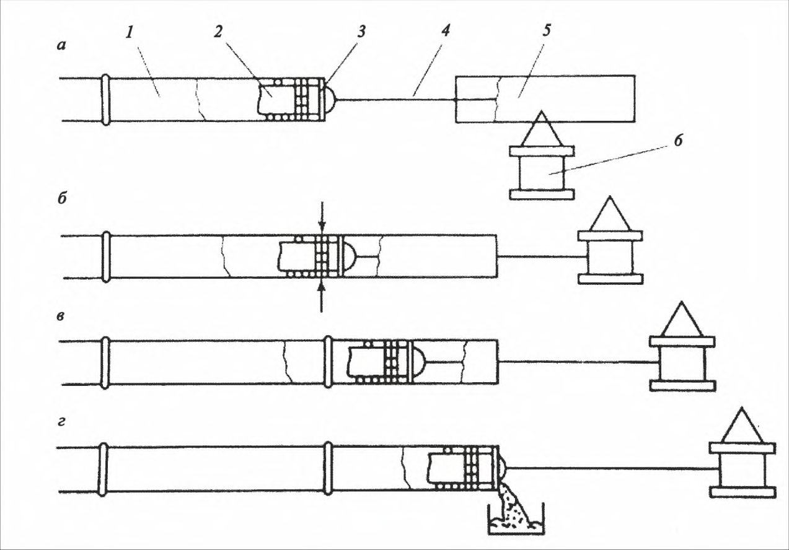
- а - пропуск штанги очистного устройства через секцию; б - центровка секций и сварка секций; в - очистка полости собранной секции; г - выброс загрязнений из секций;
1 - плеть трубопровода; 2 - внутренний центратор; 3 - очистное устройство; 4 - штанга; 5 - секция трубопровода; 6 - трубоукладчик
Рисунок А.1 - Принципиальная схема предварительной очистки полости
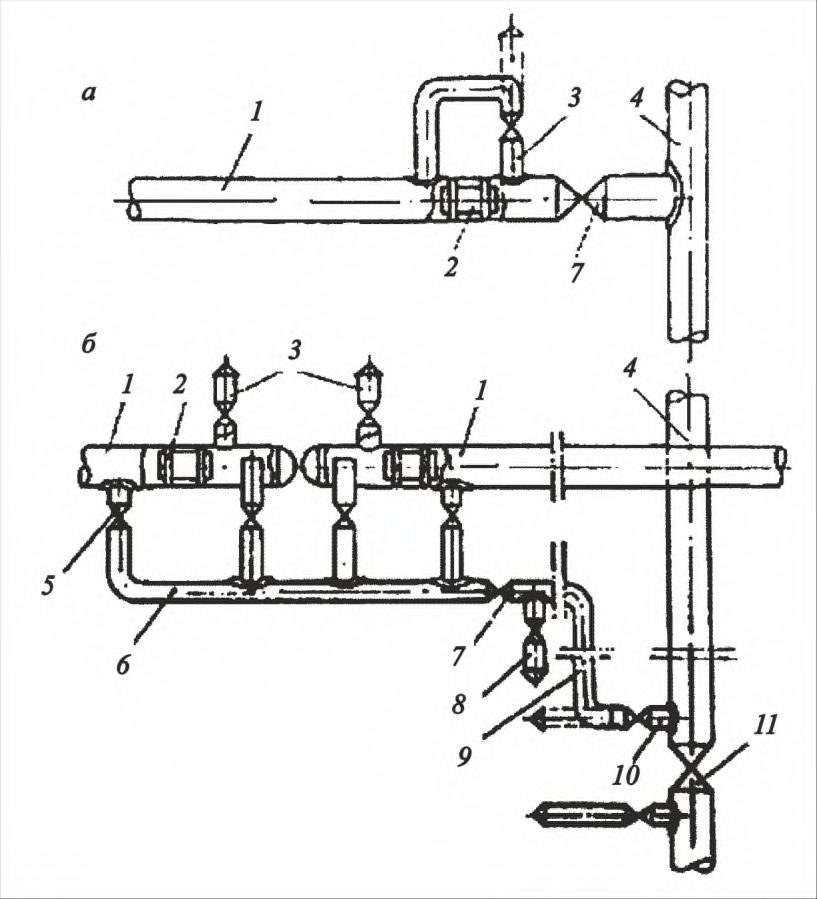
1 - ресивер; 2 - трубопровод; 3 - кран; 4 - перемычка; 5 - поршень; P 1 - давление в ресивере; P 2 - давление в запоршневом пространстве; V 1 , V 2 - объем соответственно ресивера и запоршневого пространства
Рисунок А.2 - Принципиальная схема продувки трубопровода с пропуском поршней под давлением воздуха (газа) из ресивера
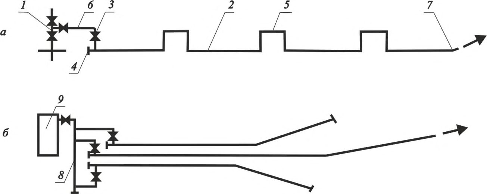
а - непосредственно на месте проектной вырезки газопровода - отвода в действующий газопровод; б - через свечу действующего газопровода и временный шлейф, подведенный к продуваемому участку;
1 - продуваемый участок; 2 - поршень; 3 - свеча на узле запасовки поршней; 4 - действующий газопровод; 5 - кран коллектора; 6 - коллектор; 7 - кран отключающий; 8 - свеча на шлейфе; 9 - шлейф; 10 - свеча на действующем газопроводе; 11 -линейный кран на действующем газопроводе
Рисунок А.3 - Принципиальная схема подключения для отбора природного газа из действующих газопроводов
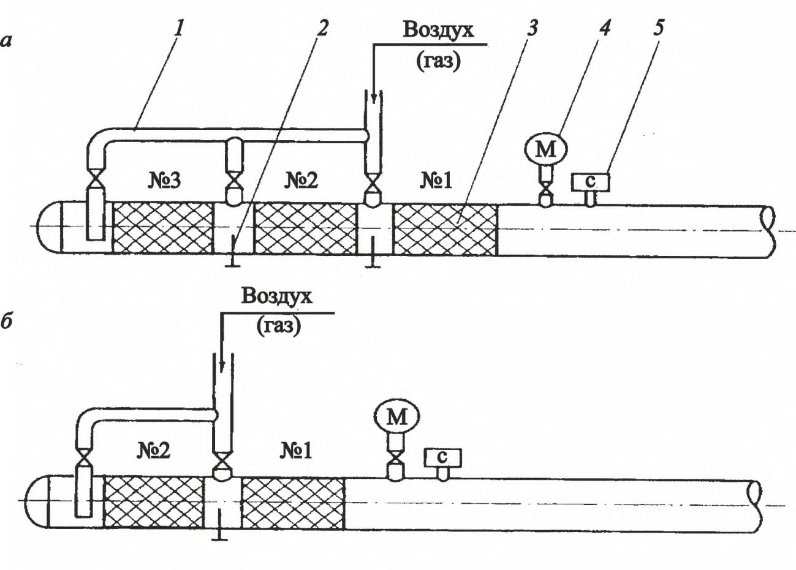
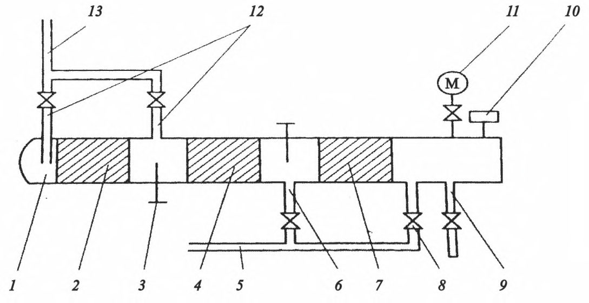
1 - отрезок трубы с заглушкой; 2 - поршень-разделитель для окончательного удаления воды; 3 - стопор; 4 - поршень-разделитель для предварительного удаления воды; 5 - подводящий шлейф от наполнительных агрегатов; 6 - патрубок с краном для промывки; 7 - очистной поршень; 8 - патрубок с краном для заливки воды в полость перед промывкой; 9 - подводящий шлейф с краном от опрессовочных агрегатов; 10 - сигнализатор прохождения поршней; 11 - манометр; 12 - патрубок с краном подачи воздуха (газа); 13 - подводящий шлейф от источника воздуха (газа)
Рисунок А.6 - Принципиальная схема камеры пуска при промывке и удалении воды после испытания трубопровода
1 - отрезок трубы с заглушкой; 2 - стопор; 3 - сигнализатор прохождения поршней; 4 - манометр; 5 - сливной патрубок с кранами; 6 - контрольный сливной патрубок с краном
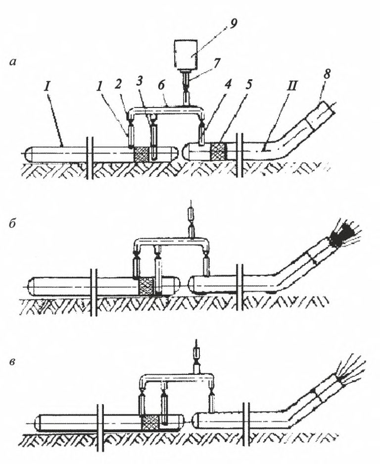
Рисунок А.7 - Принципиальная схема камеры приема поршней при промывке и удалении воды после испытания трубопровода
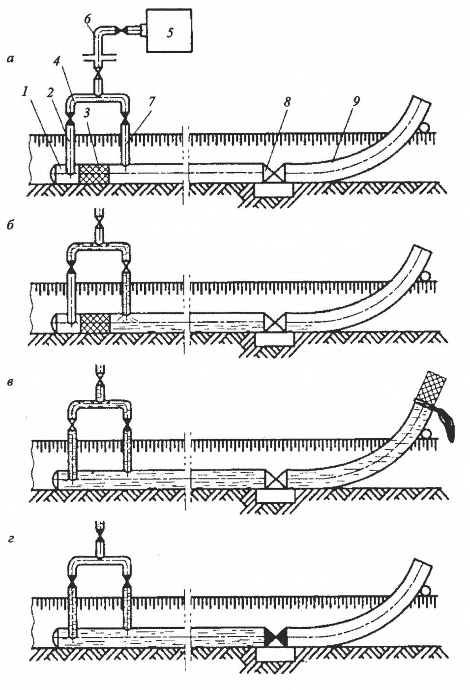
1 - пульт управления; 2 - газогенератор; 3 - турбокомпрессор; 4 - предохранительный клапан; 5 - подсоединительный трубопровод; 6 - камера пуска поршня; 7 - поршень; 8 -продуваемый трубопровод; 9 - продувочный патрубок
Рисунок А.8 - Принципиальная схема продувки трубопровода с применением компрессорной установки а - заполнение ресивера сжатым воздухом; б - пропуск поршня под давлением воздуха от компрессорных станций; в - продувка плеча II от ресивера без пропуска поршня; 1 и 5 - очистные устройства; 2 , 3 и 4 - перепускные патрубки с кранами; 6 - коллектор; 7 - подводящий патрубок; 8 - продувочный патрубок; 9 - передвижные компрессорные станции
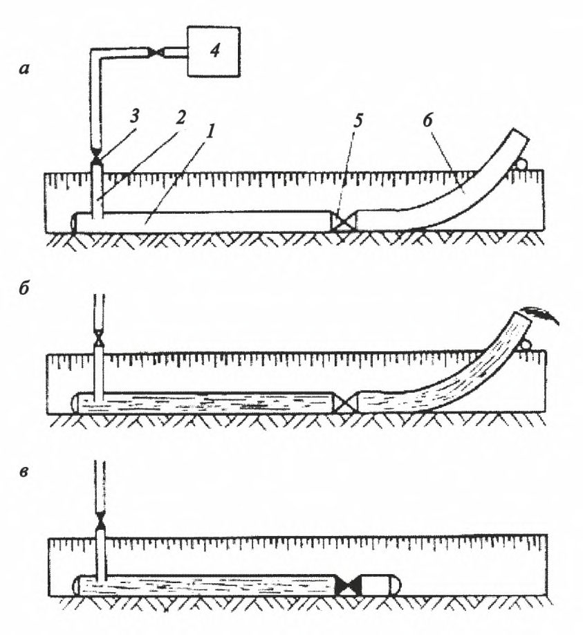
Рисунок А.9 - Принципиальная схема очистки трубопровода с пропуском поршня от компрессорных станций с использованием ресивера
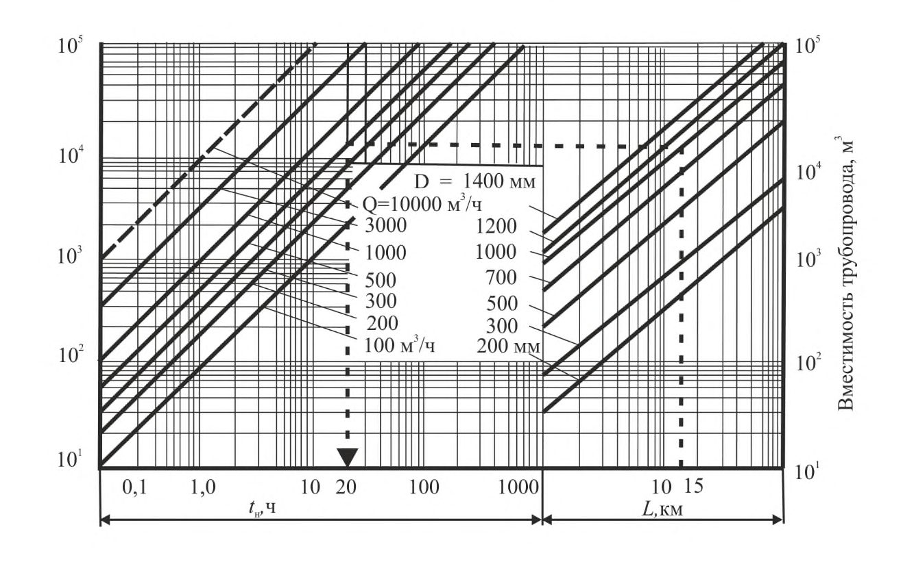
а - подготовка участка к проведению промывки; б - подача воды перед поршнемразделителем; в - пропуск поршня-разделителя в потоке воды; г - подготовка участка к испытанию;
1 - очищаемый участок; 2 и 7 - перепускные патрубки с кранами; 3 - поршеньразделитель; 4 - коллектор; 5 - наполнительные агрегаты; 6 - подводящий патрубок; 8 - линейная арматура; 9 - сливной патрубок
Рисунок А.10 - Принципиальная схема промывки трубопровода с пропуском поршня
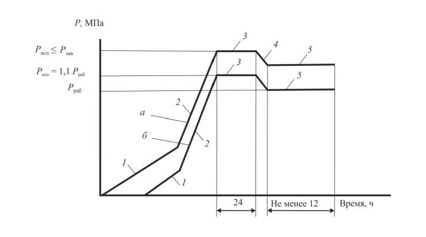
а - подготовка участка к проведению промывки; б - подача воды; в - подготовка участка к испытанию;
1 - очищаемый участок; 2 - подводящий патрубок; 3 - кран; 4 - наполнительные агрегаты; 5 - линейная арматура; 6 - сливной патрубок
Рисунок А.11 - Принципиальная схема промывки без пропуска поршня
БПриложение Б. Примеры расчетов времени наполнения трубопровода, выбора типов и
числа наполнительных агрегатов и компрессорных установок
Б.1Расчет времени наполнения трубопровода
Для определения времени наполнения трубопроводов водой или воздухом следует применять номограмму. Номограмма состоит из двух частей (рисунок Б.1). В правой части по оси абсцисс отложена протяженность L участков трубопровода от 1 до 100 км. Наклонные линии этой части номограммы обозначают номинальные диаметры трубопроводов от DN 100 до DN 1400.
По оси абсцисс в левой части номограммы отложена продолжительность наполнения трубопровода t н от 0,1 до 1000 ч. Наклонные линии этой части номограммы обозначают производительность Q , м³ /ч компрессорных станций и наполнительных агрегатов.
По оси ординат отложена вместимость трубопровода, м³ . Для сокращения размеров и удобства использования номограмма построена по логарифмической сетке с соответствующими делениями осей абсцисс и ординат и предназначена для определения времени заполнения трубопроводов воздухом до создания в нем избыточного давления 0,1 МПа или до полного наполнения водой.
Рисунок Б.1 - Номограмма для расчета времени наполнения трубопровода водой или воздухом
Для определения по номограмме времени t н заполнения трубопровода длиной L и диаметром DN с помощью компрессорной станции или наполнительного агрегата производительностью Q необходимо выполнить следующие действия.
Пример 1 - Требуется определить время заполнения воздухом участка трубопровода диаметром DN 1000, протяженностью 15 км до создания давления Р =0,6 МПа. Для заполнения используется компрессорная станция ДК-9 производительностью 600 м³ /ч.
На оси абсцисс правой части номограммы находим точку соответствующую L =15 км и от нее находим вертикальную линию до пересечения с наклонной линией, обозначающей DN 1000. Из точки пересечения этих линий проводим горизонтальную линию в левую часть номограммы до пересечения с наклонной линией, обозначающей производительность Q =600 м³ /ч. Из этой точки опускаем перпендикуляр на ось абсцисс и находим, что время заполнения участка трубопровода вместимостью 12 000 м³ до избыточного давления 1 кгс/см² составляет t н=20 ч.
Для определения времени заполнения трубопровода воздухом до создания давления Р необходимо найденное время умножить на коэффициент К , равный создаваемому давлению Р , т.е.
При использовании для заполнения трубопровода группы наполнительных агрегатов или компрессоров необходимо найденное время разделить на число этих агрегатов. Если трубопровод заполняется воздухом последовательно компрессорами низкого и высокого давления, то время заполнения следует определять раздельно для каждого приема, а затем полученные результаты суммировать.
При необходимости определения времени заполнения трубопровода агрегатами, производительность которых не указана в номограмме, по двум произвольно выбранным продолжительностям заполнения проводят наклонную линию, которая, естественно, пройдет параллельно ранее нанесенным (пунктирная линия Q =10000 м³ /ч).
Б.2Выбор типа и числа наполнительных агрегатов
Выбор наполнительных агрегатов следует осуществлять с использованием характеристик насосов в следующей последовательности:
- определить максимально возможные потери напора на участке трубопровода, подлежащем заполнению водой;
- установить скорость перемещения поршня по трубопроводу (расходом воды) в процессе заполнения полости водой;
- найти пересечение прямой, соответствующей заданному расходу воды, с характеристикой насоса;
- определить развиваемый насосом напор в точке пересечения прямой заданного расхода с характеристикой насоса;
- путем сравнения потери напора и напора наполнительного агрегата выбрать тип и число наполнительных агрегатов.
Потери напора на трение, отнесенные к 1 км трубопровода, в зависимости от его диаметра и расхода воды приведены в таблице Б.1. Характеристики наполнительных агрегатов приведены в соответствующих паспортах на указанное оборудование.
Таблица Б.1
| Диаметр трубопровода | Потери напора, м, при расходе воды, м³ /ч, равном | Потери напора, м, при расходе воды, м³ /ч, равном | Потери напора, м, при расходе воды, м³ /ч, равном | Потери напора, м, при расходе воды, м³ /ч, равном | Потери напора, м, при расходе воды, м³ /ч, равном |
|---|---|---|---|---|---|
| D у , мм | 100 | 300 | 500 | 1000 | 2000 |
| 1420 | 0,00029 | 0,0020 | 0,0050 | 0,0178 | 0,0616 |
| 1220 | 0,00051 | 0,0036 | 0,0091 | 0,0320 | 0,1110 |
| 1020 | 0,00148 | 0,0103 | 0,0255 | 0,0892 | 0,3315 |
| 820 | 0,00456 | 0,0318 | 0,0818 | 0,2754 | 0,9640 |
| 720 | 0,00613 | 0,0580 | 0,1516 | 0,5308 | 1,9718 |
| 530 | 0,02240 | 0,3118 | 0,7648 | 2,8556 | 11,423 |
СП 411.1325800.2018
| 325 | 0,3926 | 4,0100 | 10,491 | 39,347 | 157,39 |
|---|---|---|---|---|---|
| 219 | 0,48570 | 30,5441 | 83,36419 | 327,5012 | 1293,1524 |
| 159 | 15,4430 | 132,6729 | 363,1351 | 1430,7963 | 5661,6838 |
Пример 1 - Выбрать тип и число наполнительных агрегатов при заполнении водой трубопровода диаметром 1020 мм протяженностью 25 км с пропуском поршня-разделителя. Максимальный перепад высот по трассе составляет 140 м. Наполнительный агрегат установлен на расстоянии 120 м от испытуемого трубопровода и соединяется с ним трубопроводом диаметром 325 мм.
Для заданного технологического процесса оптимальная скорость заполнения составляет 1 км/ч, т.е. 785 м³ /ч.Такая скорость обеспечивается при расходе воды в час, равном объему 1 км трубопровода.
Возможные максимальные потери давления при заполнении участка трубопровода:
140 м - на преодоление максимального перепада высот по трассе;
5 м - на перемещение поршня;
- 3 м - на преодоление местных сопротивлений в обвязке наполнительного аграгата и в соединительном трубопроводе (по таблице Б.1 при Dy = 325 мм, Q = 785 м³ /ч, L = 0,12 км);
- 2 м - на преодоление сил трения и перемещение загрязнений (по таблице Б.1 при Dy = 1020 мм, Q = 785 м³ /ч, L = 25 км).
Суммарный необходимый напор составит:
Для этого примера можно рекомендовать использование двух параллельно включенных наполнительных агрегатов типа АН-501 (либо аналогичных по характеристикам), производительность каждого 480 м³ /ч и напор 160 м.
Б.3Выбор типа и числа компрессорных установок
Выбор типа и числа компрессорных установок следует осуществлять в следующей последовательности:
- определить максимально возможные потери напора (на трение, перепад высот, сопротивление перемещению поршня) на участке трубопровода;
- определить минимальное давление нагнетания компрессора;
- определить тип компрессора обеспечивающего рассчитанное минимальное давление нагнетания компрессора;
- определить необходимое число компрессорных установок.
Минимальное давление нагнетания компрессора вычисляют по формуле (Б.1).
Необходимое число компрессорных установок К вычисляют по формуле (Б.2).
где 𝐹 - площадь внутренней поверхности полости трубопровода, м² ;
𝑇 - абсолютная температура воздуха (газа) соответственно в трубопроводе или ресивере, К ;
𝑇 нор - абсолютная температура воздуха или газа в нормальных условий, 𝑇 нор = 293 К ;
𝑃 нор - давление при нормальных условиях ( при 𝑇 нор = 293 К ; 𝑃 нор = 0,1 МПа ), МПа; 𝑛 - коэффициент запаса, 𝑛 = 1,1 - для равнинной местности, 𝑛 = 1,25 - для пересеченной местности; ρ - плотность воды ( ρ = 1000 кг/м³ ), кг/м³ ; λ - коэффициент гидравлического сопротивления трубопровода, λ = 0,15 при удалении воды из предварительно очищенных (протягиванием или продувкой) участков газопровода; λ = 0,025 - при удалении воды из газопровода после его предварительной промывки;
𝐿 - длина очищаемого участка, м; h - разность высотных отметок между концом очищаемого участка и поршнем при его: перемещении по газопроводу, проложенному по пересеченной местности, м. (При прохождении поршня через точки газопровода, расположенные по продольному профилю выше конца очищаемого участка, значение h принимают отрицательным); 𝜐 мин -минимальная скорость передвижения поршня-разделителя в соответствии с рекомендациями завода-изготовителя; 𝑔 - ускорение свободного падения, равное 9,81 м/с 2 ;
Δ 𝑃 - сопротивление перемещению поршня-разделителя по трубопроводу в соответствии с рекомендациями завода-изготовителя (Δ 𝑃 = (0,05 - 0,2) МПа);
𝑃 к -давление в конце участка, МПа.
При контрольном пропуске поршней-разделителей, перемещающихся по газопроводу под давлением воздуха, подаваемого в осушаемый участок непосредственно от передвижных компрессорных установок, используют те же компрессорные установки, что и при предварительном удалении воды после гидравлических испытаний.
Необходимое число передвижных компрессорных установок для контрольного пропуска поршней-разделителей вычисляют по формуле (Б.3)
𝑛 = 1,1 - 1,2 - для трубопроводов, проложенных по равнинной местности; 𝑛 = 1,2 - 1,5 - для трубопроводов, проложенных по пересеченной местности; 𝜐 опт - оптимальная скорость передвижения поршня-разделителя в соответствии с рекомендациями завода-изготовителя;
𝑄 - производительность одного компрессора, м³ /с.
Величина B может принимать следующие значения:
где 𝑅 - газовая постоянная.
Пример 1 Определить тип и число компрессорных установок для удаления воды из трубопровода диаметром 720 мм протяженностью 25 км с пропуском поршня-разделителя с температурой воздуха 298 К по равнинной местности (перепад высот 30 м). Потери напора на трение 0,02 МПа, потери перепада высот 0,3 МПа, сопротивление перемещению поршня-разделителя по трубопроводу 0,05 МПа, давление в конце участка 0,1 МПа (открытый участок).
Определяем минимальное давление нагнетания компрессора:
По минимальному давлению нагнетания определяем тип компрессора. Возьмем компрессор типа ДК-9 (либо другой с аналогичными характеристиками) с давлением нагнетания 0,6 МПа с производительностью 0,167 м³ /с.
Необходимое число компрессорных установок
Необходимое число компрессорных установок для контрольного пропуска поршней-разделителей
ВПриложение В. Порядок проведения испытаний, применяемые технические средства, графики изменения давлений в трубопроводе и принципиальные схемы испытаний
Порядок проведения испытаний и применяемые технические средства по очистке полости и испытаниям трубопроводов (участков) приведены в таблицах В.1 и В.2.
Таблица В.1 - Последовательность выполнения работ и технические средства по очистке полости и испытаниям трубопроводов (участков) с применением гидравлического метода
| Последовательность выполнения работ | Технические средства |
|---|---|
| Защита полости трубопровода от загрязнений | Инвентарные заглушки, водозаборные фильтры, сетки, котлованы |
| Предварительная очистка полости в процессе сварочно-монтажных работ | Очистное устройство, смонтированное на внутреннем центраторе. Емкость для сбора загрязнений |
| Предварительное испытание крановых узлов запорной арматуры трубопровода | Опрессовочные агрегаты. Манометры |
| Промывка трубопровода и сбор загрязнений в конце очищаемого участка | Наполнительные агрегаты. Поршни- разделители. Камеры пуска-приема поршней и загрязнений. Прибор поиска поршней. Манометры. Резервуар с системой очистки загрязненных вод |
| Контроль проходного сечения трубопровода | Поршень-калибр. Прибор поиска поршней |
| Испытание трубопровода с применением воды | Комплекс наполнительных и опрессовочных агрегатов. Приборы поиска утечек. Манометры. Термометры |
| Удаление воды после гидравлического испытания трубопровода с последующей очисткой и регулируемым возвратом в окружающую среду. Рекультивация | Поршни-разделители. Прибор поиска поршней. Манометры. Резервуар с системой очистки загрязненных вод |
| Осушка полости | Поршни-разделители. Резервуары сбора метанола |
Таблица В.2 - Последовательность выполнения работ и технические средства по очистке полости и испытаниям трубопроводов (участков) с применением пневматического метода
| Последовательность выполнения работ | Технические средства |
|---|---|
| Защита полости трубопровода от загрязнений | Инвентарные заглушки, воздухозаборные фильтры, сетки, котлованы |
| Предварительная очистка полости в процессе сварочно-монтажных работ | Очистное устройство, смонтированное на внутреннем центраторе. Емкость для сбора загрязнений |
| Предварительное испытание крановых узлов запорной арматуры трубопровода | Опрессовочные агрегаты. Манометры |
| Продувка трубопровода с пропуском поршня и сбор загрязнений в конце очищаемого участка | Высокопроизводительные компрессорные установки. Поршни для очистки полости. Камеры пуска-приема поршней и загрязнений. Прибор поиска поршней. Манометры |
| Контроль проходного сечения трубопровода | Поршень-калибр. Прибор поиска поршней |
| Испытание трубопровода с применением воздуха | Высокопроизводительные компрессорные установки. Прибор поиска утечек. Манометры. Термометры |
Графики изменения давления в трубопроводах при гидравлических испытаниях приведены на рисунках В.1 и В.2. а - в нижней точке трубопровода; б - в верхней точке трубопровода; 1 - заполнение трубопровода водой и подъем давления с помощью наполнительных агрегатов; 2 - подъем давления до испытательного при помощи опрессовочных агрегатов; 3 - испытания на прочность; 4 - снижение давления; 5 - проверка на герметичность
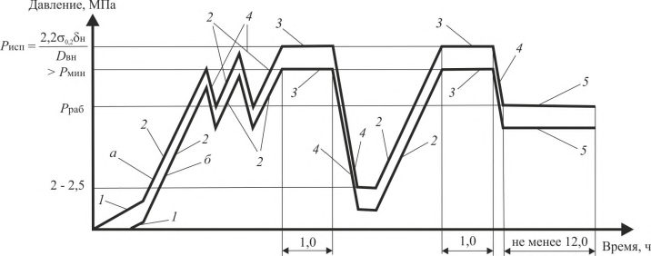
Рисунок В.1 - График изменения давления в газопроводе при гидравлических испытаниях
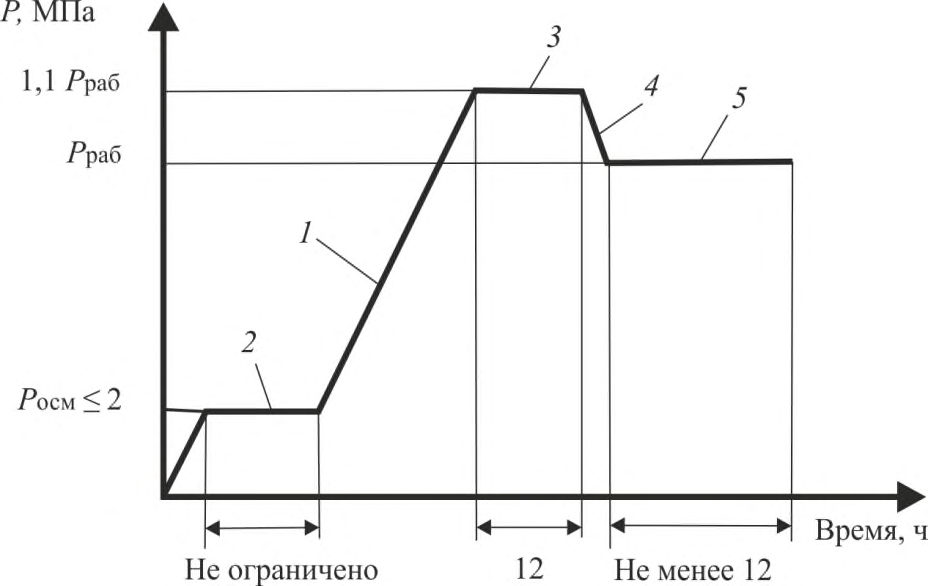
а - в нижней точке трубопровода; б - в верхней точке трубопровода;
- 1 - заполнение трубопровода водой и подъем давления при помощи наполнительных агрегатов; 2 - подъем давления до испытательного при помощи опрессовочных агрегатов; 3 - испытание на прочность; 4 - снижение давления; 5 -проверка на герметичность
Рисунок В.2 - График изменения давления в нефтепроводе и продуктопроводе при гидравлических испытаниях
Принципиальная схема испытаний участка трубопровода методом стресстеста приведена на рисунке В.3
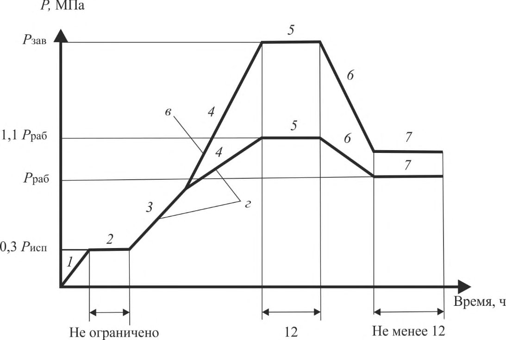
1 - испытуемый трубопровод; 2 - наполнительный агрегат; 3 - насос низкого давления; 4 - всасывающий патрубок; 5 - резервуар для очистки воды; 6 - опрессовочный агрегат; 7 - шлейф от ресивера; 8 - очистной и разделительный поршни; 9 - стопор; 10 - свеча для выпуска воздуха; 11 - сливной (перепускной) трубопровод; 12 - блок измерения расхода воды (высокоточный сенсор расхода, датчик температуры, преобразователь сигналов); 13 - блок измерения давления (высокоточный датчик давления, датчик температуры); 14 - контрольный датчик давления и датчик температуры; 15 - кабельные линии; 16 - блок обработки результатов измерений (контроллер, компьютер)
Рисунок В.3 - Принципиальная схема испытаний участка трубопровода повышенным давлением (метод стресс-теста)
Графики изменения давлений в трубопроводе при проведении испытаний методом стресс-теста, пневматическим, комбинированным и гидравлическим методом приведены на рисунках В.4 - В. 6.
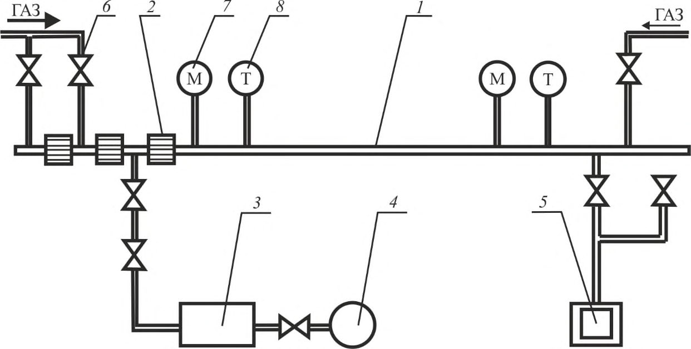
а - в нижней точке участка; б - в верхней точке участка;
1 - заполнение трубопровода водой; 2 - подъем давления со скоростью 0,01-0,02 Р исп в минуту; 3 - испытания на прочность; 4 - снижение давления; 5 - проверка на герметичность; σ0,2 - нормативный предел текучести трубной стали; н - номинальная толщина стенки трубы с учетом отрицательного допуска; D вн - внутренний диаметр трубы; Р исп - максимальное давление испытаний; Р мин - минимальное давление испытаний
Рисунок В.4 - График изменения давления в трубопроводе при испытаниях участка повышенным давлением (метод стресс-теста)
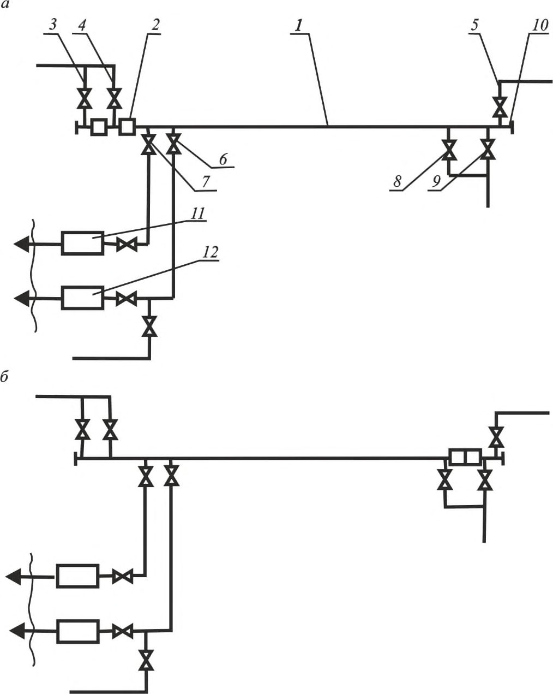
1 - подъем давления; 2 - осмотр трубопровода; 3 - испытания на прочность; 4 - сброс давления; 5 - проверка на герметичность (P осм - давление, при котором производится осмотр трассы)
Рисунок В.5 - График изменения давления в трубопроводе при пневматических испытаниях
1 - подъем давления от 0 до 0,3 P исп ≤ 2 МПа; 2 - осмотр трубопровода; 3 , 4 - подъем давления до испытательного ( г - газ; в - вода); 5 - испытания на прочность (в нижней точке P исп = P σ0,2; в верхней точке P исп = 1,1 P раб ); 6 - снижение давления; 7 - проверка на герметичность
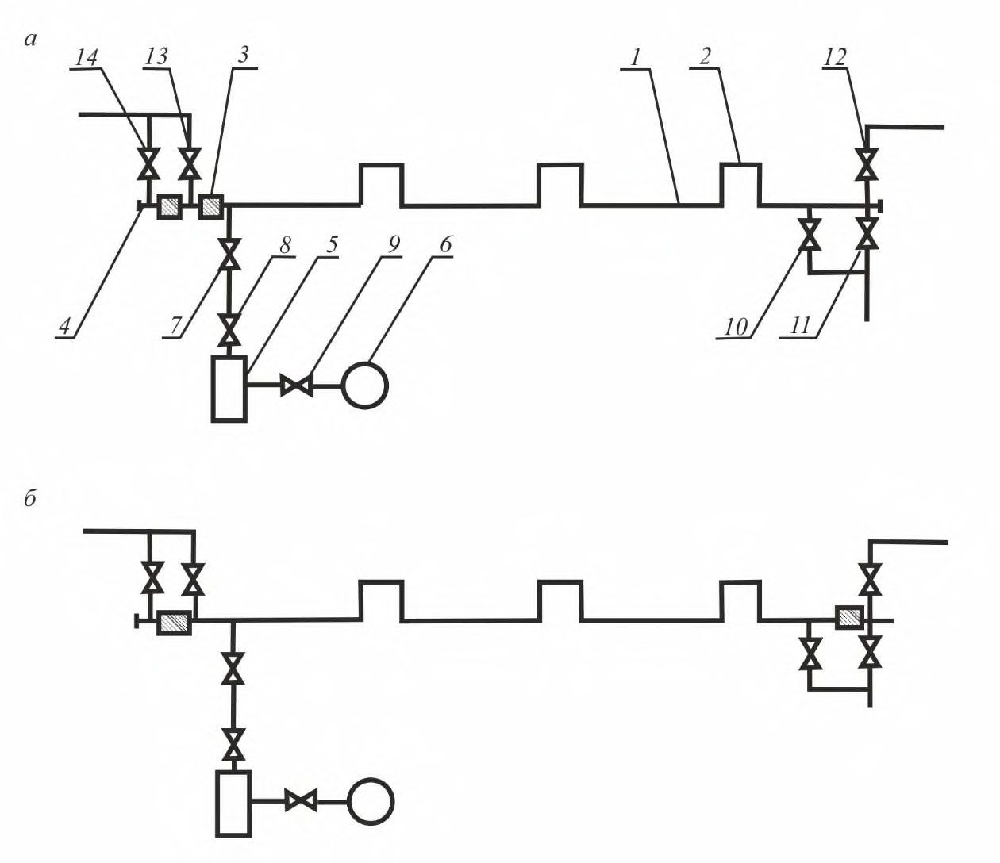
Рисунок В.6 - График изменения давления в трубопроводе при комбинированных испытаниях
Принципиальные схемы гидравлических испытаний приведены на рисунках В.7 - В.10.
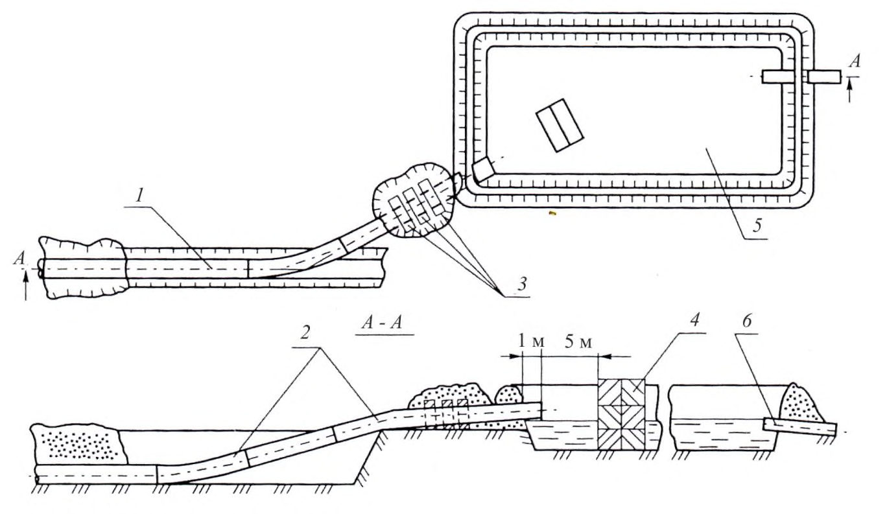
- трубопровод; 2 - поршень; 3 - агрегат наполнительный (опрессовочный); 4 - источник воды; 5 - резервуар-отстойник; 6 - запорная арматура; 7 - манометр; 8 - термометр Рисунок В.7 - Принципиальная схема гидравлических испытаний трубопровода при отрицательных температурах
- а - заполнение, подъем давления, испытания; б - очистка полости и удаление воды с пропуском поршня под давлением газа;
- 1 - трубопровод; 2 - поршень; 3 , 4 , 5 - краны подачи газа; 6 , 7 - краны подачи воды; 8 , 9 -краны слива воды; 10 - заглушка; 11 - наполнительный агрегат; 12 - опрессовочный агрегат
Рисунок В.8 - Принципиальная схема гидравлических испытаний подземного трубопровода без теплоизоляции
а - заполнение, подъем давления, испытания; б - удаление воды с пропуском поршня под давлением газа;
1 - трубопровод; 2 - компенсатор; 3 - поршень; 4 - заглушка; 5 - наполнительноопрессовочная станция; 6 - емкость горячей воды; 7,8,9 - краны подачи воды; 10,11 - краны слива воды; 12,13,14 - краны подачи газа
Рисунок В.9 - Принципиальная схема гидравлических испытаний надземного трубопровода подогретой водой
1 - крановый узел запорной арматуры; 2 - патрубок с заглушкой; 3 - сливной патрубок с краном; 4 - воздухоспускной патрубок с краном; 5 - манометр; 6 - свеча с заглушкой; 7 - шлейф с арматурой; 8 - опрессовочный агрегат; 9 - передвижная емкость с водой
Рисунок В.10 - Принципиальная схема предварительных гидравлических испытаний кранового узла запорной арматуры
Принципиальная схема слива воды из трубопровода после промывки и испытаний приведена на рисунке В.11.
1 - трубопровод; 2 - промывочный патрубок; 3 - пригрузы; 4 - водоразделительная стенка из железобетонных блоков; 5 - резервуар-отстойник; 6 - сливная труба Рисунок В.11 - Принципиальная схема слива воды из трубопровода после
промывки и испытаний
Библиография
- [1] Федеральный закон от 10 января 2002 г. № 7-ФЗ «Об охране окружающей среды»
- [2] Федеральный закон от 26 июня 2008 г. № 102-ФЗ «Об обеспечении единства измерений»
- [3] Федеральный закон от 3 июня 2006 г. № 74-ФЗ «Водный кодекс Российской Федерации»
- [4] Постановление Правительства Российской Федерации от 12 марта 2008 г. № 165 «О подготовке и заключении договора водопользования»
- [5] Постановление Правительства Российской Федерации от 30 декабря 2006 г. № 844 «О порядке подготовки и принятия решения о предоставлении водного объекта в пользование»
- [6] Правила безопасности в нефтяной и газовой промышленности. Утверждены приказом Ростехнадзора Российской Федерации от 12 марта 2013 г. №101
- [7] Приказ Федеральной службы по экологическому, технологическому и атомному надзору от 6 ноября 2013 г. №520 «Об утверждении Федеральных норм и правил в области промышленной безопасности «Правила безопасности для опасных производственных объектов магистральных трубопроводов» (Зарегистрирован в Министерстве юстиции Российской Федерации 16 декабря 2013 г. № 30605)
- [8] Приказ Минтруда Российской Федерации от 1 июня 2015 г № 336н «Об утверждении «Правил по охране труда в строительстве» (Зарегистрирован в Министерстве юстиции Российской Федерации 13 августа 2015 г. № 38511)
- [9] ВСН 005-88 Строительство промысловых стальных трубопроводов. Технология и организация
- [10] ВН 39-1.9-004-98 Инструкция по проведению гидравлических испытаний трубопроводов повышенным давлением (методом стресс-теста)
- [11] Инструкция по технике безопасности при производстве, хранении и транспортировании (перевозке) и использовании одоранта. Утверждена приказом ОАО «Газпром» от 29 марта 1999 г.